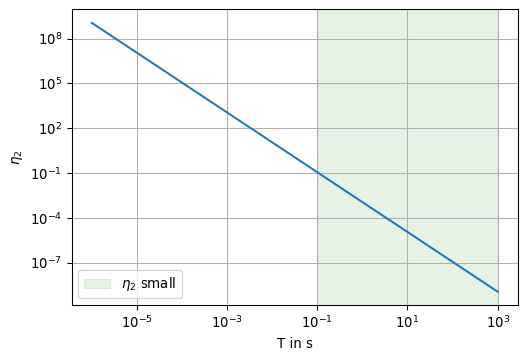

As we have seen, Maxwell’s equations can be coupled using the constitutive equations and Ohm’s law.
After Fourier transform w.r.t. time \(t\), but in a slightly different notation, we obtain \[
\begin{bmatrix}
\curl & -i\omega\varepsilon \mathbf I \\
+i\omega\mu_0 \mathbf I & \curl
\end{bmatrix}
\begin{bmatrix}
\mathbf H \\ \mathbf E
\end{bmatrix} =
\begin{bmatrix}
\mathbf J \\ \mathbf 0
\end{bmatrix}
\]
\[
\begin{bmatrix}
\divergence & 0 \\
0 & \divergence
\end{bmatrix}
\begin{bmatrix}
\mathbf B \\ \mathbf D
\end{bmatrix} =
\begin{bmatrix}
0 \\ \rho_E
\end{bmatrix}
\] Note that the sources of the fields— \(\mathbf J\) and \(\rho_E\) —always appear on the right-hand side of the equations. \(\mathbf I\) denotes the 3-by-3 identity matrix.
By elimination of one field, e.g., the magnetic field, we are able to cast the system of first-order ODEs into a second-order partial differential equation (PDE).
As an alternative, a complete solution of the Maxwell system, i.e., \(\mathbf E\) and \(\mathbf H\), can be obtained by taking the solution of one of the two vector valued equations and applying the curl.
We refer to the following types of PDEs:
elliptic
parabolic
hyperbolic
Self-study questions
What are the characteristic features of the three types of PDEs?
What typical (geophysical) applications are associated with the above types?
5.1 The curl-curl equation
We first eliminate one field from the set of Maxwell’s equations by applying the curl operator (\(\curl\)) to one of the equations, i.e., Faraday’s law 4.2.
This results in a second-order PDE because we differentiate twice with respect to spatial coordinates.
Tip
\[
\begin{align}
\curl \mathbf e & = -\partial_t \mathbf b \\
\curl \curl \mathbf e & = \curl (-\partial_t \mathbf b) \\
& = -\curl (\partial_t \mathbf b) \\
& = -\partial_t\curl \mathbf b \\
& = -\partial_t\curl ( \mu \mathbf h) \\
& = -\partial_t \mu \curl \mathbf h \\
& = -\mu \partial_t \curl \mathbf h \\
& = -\mu \partial_t (\mathbf j + \partial_t \mathbf d) \\
& = -\mu \partial_t (\sigma \mathbf e + \partial_t \mathbf d) \\
& = -\mu \partial_t (\sigma \mathbf e + \partial_t \varepsilon \mathbf e) \\
& = -\mu \partial_t \sigma \mathbf e -\mu \partial^2_{tt} \varepsilon \mathbf e \\
& = -\mu \sigma \partial_t \mathbf e -\mu \varepsilon \partial^2_{tt} \mathbf e
\end{align}
\]
Finally, we obtain the curl-curl equation for the electric field \(\mathbf e\) as \[
\curl \curl \mathbf e +\mu \sigma \partial_t \mathbf e + \mu \varepsilon \partial^2_{tt} \mathbf e = \mathbf 0.
\tag{5.1}\]
This is a second-order PDE with first- and second-order time derivatives.
Note that you obtain a similar PDE for the magnetic field \(\mathbf h\) if you apply the steps outlined above to Ampere’s law.
The following identity is useful for any vector field \(\mathbf f\): \[
\curl \curl \mathbf f = \grad \divergence \mathbf f - \laplacian \mathbf f
\tag{5.2}\]
This equation is useful, e.g., when \(\divergence \mathbf f = 0\). In this case the curl-curl operator can be replaced by \(-\laplacian\), the vector Laplace operator defined over a vector field.
Warning
The vector Laplacian is similar to the scalar Laplacian. The scalar Laplacian applies to a scalar field and returns a scalar quantity, whereas the vector Laplacian applies to a vector field and returns a vector quantity.
In Cartesian coordinates, the returned vector field is equal to the vector field of the scalar Laplacian applied to each vector component.
Under which conditions can we switch from the curl-curl to the Laplace operator? Clearly, the term \(\grad \divergence \mathbf f\) must vanish (or its contribution must be negligible).
5.1.1 Decay of free charges
When the electric field \(\mathbf e\) is considered, we are faced with the following problem: Under which conditions \(\divergence \mathbf e\) becomes negligible small?
The answer should be clear: When there are no free charges present in the considered domain, there is no associated electric field.
Recall, that in a uniform dielectric medium there holds Gauß’ s law for electric charges
\[
\divergence \mathbf e = \frac{\rho_E}{\varepsilon},
\]
where \(\rho_E\) is the volume charge density and \(\varepsilon = \varepsilon_r \varepsilon_0\) is the permittivity.
Let’s find out how to solve the problem.
We want to show that \(\divergence \mathbf e \approx 0\) for some time \(t>0\). As long as \(t \le 0\), there is a certain charge density \(\rho_E(t)\) concentrated at, e.g., the origin of a uniform fullspace.
With \[
\begin{align}
\divergence \mathbf d & = \rho_E \\
\divergence \mathbf j & = \divergence (\sigma \mathbf e) = \grad \sigma \cdot \mathbf e + \sigma \divergence \mathbf e \\
\sigma \divergence \mathbf e & = \sigma \frac{\rho_E}{\varepsilon}
\end{align}
\] we obtain an initial-value problem for the charge density
To study the decay of a free charge denoted by an electrical charge density, we define as initial condition for \(t=0\) that \(\rho_E(0) = 1~A\cdot s\cdot m^{-3}\) .
Further, the conductivity of the uniform fullspace is 0.01 S/m.
We plot the function 5.3 for a very small time window:
With the values given above, the charge density drops to 1 ppm of its initial value after 1.22e-08 seconds.
5.2 The Telegraph equation
By virtue of 5.2 we can cast the curl-curl equation 5.1 into the telegraph equation of induction, such that
\[
-\laplacian \mathbf e + \mu \sigma \partial_t \mathbf e + \mu \varepsilon \partial^2_{tt} \mathbf e = \mathbf 0.
\tag{5.4}\]
Note
Note that the same PDE can be derived for the magnetic field!
Eq. 5.4 and 5.1 are second-order linear PDEs with at most second-order time derivatives. Hence, they describe wave phenomena.
Note
A second-order, linear, constant-coefficient PDE for \(u\) takes the general form
\[
A u_{xx} + 2 B u_{xy} + C u_{yy} + D u_x + E u_y + F u + G = 0
\]
This PDE is classified as being
parabolic, when \(B^2 - AC = 0\)
hyperbolic, when \(B^2 - AC > 0\)
elliptic, when \(B^2 - AC < 0\).
In our case, \(x\) plays the role of any spatial variable, and \(t\) plays the role of \(y\).
Hence, for 5.4, \(A=-1\), \(E=\mu\sigma\), \(C=\mu\varepsilon\), and the remaining coefficients are zero.
Checks:
\(B^2 - AC = 0 - (-1 \cdot \mu\varepsilon) > 0\)\(\to\) PDE is hyperbolic.
\(B^2 - AC = 0 - (-1 \cdot 0) = 0\)\(\to\) PDE is parabolic
For the elliptic PDE there are no time derivatives, we can therefore let \(x\) and \(y\) take their roles as Cartesian coordinates.
So, with \(A = C = -1\),
\(B^2 - AC = 0 - (-1 \cdot -1) < 0\)\(\to\) PDE is elliptic.
5.3 Quasi-static approximation
In geo-electromagnetic applications, the fields vary slowly with frequencies much less than 1 MHz. For Magnetotellurics, e.g., we use frequencies well below 100 Hz. In CSEM applications, frequencies rarely exceed 100 kHz.
The low frequency content of the electromagnetic field variations give reason to assume that the term associated with the second-order time derivative might be dropped.
We now want to provide a justification.
The terms in 5.1 have very different magnitudes depending on the scale of observation. To quantify the relative importance of the terms to each other, we cast the PDE into a dimensionless form.
This can be achieved by introducing scale lengths in space and time.
We introduce a typical scale length \(L\) and a typical period \(T\) and scale all spatial variables \(\ell\) as well as the time \(t\).
The dimensionless variables are \[
\ell' = \ell / L \qquad t' = t / T
\]
With the chain rule we obtain the dimensionless derivatives of a field component \(f\)\[
\frac{\partial f}{\partial \ell} = \frac{\partial f}{\partial \ell'} \frac{\partial \ell'}{\partial \ell} = \frac{1}{L} \frac{\partial f}{\partial \ell'}
\]
This carries over to the differential operators, i.e., \[
\curl \curl \mathbf f = \frac{1}{L^2} \nabla' \times \nabla' \times \mathbf f.
\]
We obtain a PDE with scaled coefficients, i.e., \[
\nabla' \times \nabla' \times \mathbf e + \eta_1 \partial_{t'} \mathbf e + \eta_2 \partial^{2}_{t't'} \mathbf e = \mathbf 0
\]
The coefficients are \[
\begin{align}
\eta_1 &= \frac{L^2}{T} \mu \sigma \\
\eta_2 &= \frac{L^2}{T^2} \mu\varepsilon
\end{align}
\]
We assume that \(\mu=\mu_0\) and \(\varepsilon = \varepsilon_0\).
The exercise is now to show under which conditions there holds that \(\eta_1 \gg \eta_2\).
What is the physical interpretation of \(\eta_2\)?
We see that \[
\eta_2 = \frac{L^2}{T^2} \mu\varepsilon = \left( \frac{L}{T c_0} \right)^2.
\]
\(L/c_0\) is the time an electromagnetic wave needs in free space to travel over the distance \(L\). If \(\eta_2\) is small, this time is much less than a typical time \(T\) during which significant changes in the field occur. Such changes can be regarded as happening instantaneously over the region spanned by \(L\).
Until now, we have not considered the conductivities in that region. This can be studied with the ratio of both coefficients. We want to show that \[
\frac{\eta_1}{\eta_2} = \frac{\mu\sigma}{\mu\varepsilon} T = c_0^2 \mu\sigma T \gg 1.
\]
We illustrate our findings and calculate meaningful values for the coefficients.
Show the code
def eta1(T, L, sigma): mu0 = np.pi *4e-7return L**2/ T * mu0 * sigmadef eta2(T, L): mu0 = np.pi *4e-7 epsilon0 =8.854e-12return L**2/ T**2* mu0 * epsilon0T = np.logspace(-6, 3, num=91)L =1e7fig, ax = plt.subplots(1, 1, figsize=(6,4))ax.loglog(T, [eta2(t, L) for t in T])ax.set_xlabel('T in s')ax.set_ylabel(r'$\eta_2$')ax.axvspan(0.1, T[-1], color='green', alpha=0.1, label=r'$\eta_2$ small')ax.legend()ax.grid(True)

In global investigations for which \(L \approx 10^4\) km, we observe that \(\eta_2\) is “small” (less than, e.g., 0.1) for \(T > 0.1\) seconds.
Show the code
fig, ax = plt.subplots(1, 1, figsize=(6,4))ax.loglog(1/ T, [eta1(t, L, 1e-5) / eta2(t, L) for t in T])ax.set_xlabel('frequency in Hz')ax.set_ylabel(r'$\eta_1 / \eta_2$')ax.axvspan(T[0], 1e5, color='green', alpha=0.1, label=r'$\eta_1/\eta_2$ large')ax.legend()ax.grid(True)
In the last example we have used a conductivity of \(10^{-5}\) S/m as a reasonable low value for minerals. We recognize that the ratio is large for frequencies less than \(10^5\) Hz.
To conclude, we can safely assume that the second term, \(\eta_2\), and correspondingly the term \(\mu\varepsilon\), can be neglected for frequencies less than \(10^5\) Hz for the lowest reasonable value of the conductivity in the Earth. For higher conductivities, the result becomes even more pronounced.
As a consequence, the displacement current density in Ampere’s law can be neglected as well, such that \[
\curl \mathbf{h} = \mathbf j
\]
We call this the quasi-static approximation of Maxwell’s equations.
Note that this corresponds to the classical formulation of Maxwell’s equations, which have later been extended to account for displacement currents.
The quasi-static approximation however comes at a price: The coefficient of the second-order time derivative term of 5.1 has the physical dimension of the inverse square of the wave velocity, i.e., \[
\mu\varepsilon = \frac{1}{c_0^2}.
\]
When we neglect this term, we implicitly assume that \[
\frac{1}{c_0^2} \to 0,
\] which violates the generally recognized fact that the speed of light is finite. On the other hand, this makes it clear that changes in the fields happen everywhere at the same time.
The curl-curl equation for the electric field under quasi-static approximation reads \[
\curl \curl \mathbf e + \mu\sigma \partial_t \mathbf e = \mathbf 0
\tag{5.5}\]
With the identity introduced earlier, we write
\[
-\laplacian \mathbf e + \mu\sigma \partial_t \mathbf e = \mathbf 0
\tag{5.6}\]
With our definition of the Fourier transform given by 3.2 we transform the time-domain expressions into the frequency domain.
By doing so, we decouple the time-dependency from the PDE. For most CSEM applications, this is common practice.
For time-harmonic fields with an angular frequency of \(\omega = 2 \pi f\), we write \[
\mathbf E(\omega) = \mathbf E_0 \exp(i \omega t)
\] and use the properties of the Fourier transform to equivalently formulate time derivatives. It holds that \[
\partial_t \mathbf E_0 \exp(i \omega t) = i \omega \mathbf E_0 \exp(i \omega t) = i \omega \mathbf E(\omega).
\] In other words, we simply replace all first-order time-derivatives with \(i\omega\), and all second-order time derivatives by \(-\omega^2\).
We use the identity 5.2 and obtain \[
-\laplacian \mathbf E + i \omega \mu \sigma \mathbf E = \mathbf 0
\]
Notation
In what follows, we use capital letters for fields in the frequency domain, e.g., \(\mathbf E\).
In the time domain, the fields are typeset in small letters, e.g., \(\mathbf e\).
Many textbooks use the notation \[
\laplacian \mathbf e - i \omega \mu \sigma \mathbf e = \mathbf 0
\] with the abbreviation \[
\laplacian \mathbf e + k^2 \mathbf e = \mathbf 0,
\tag{5.7}\] where \[
k^2 = - i \omega \mu \sigma.
\]
Equation 5.7 is referred to as the homogeneous Helmholtz equation.
The coefficient \(k\) is often called the wave number or wave propagation constant.
Warning
Note that \(k^2\) is a complex-valued quantity. The roots of \(k^2\) must be chosen carefully.
5.4.1 The roots of \(k^2\)
We consider a Helmholtz equation for a plane wave \[
\mathbf H = [1, 0, 0]^\top \text{ in } z < 0
\] with a time dependency of \(\exp(i \omega t)\). \(\mathbf H\) is a magnetic field, which is uniform in any horizontal plane, and exhibits only a horizontal component.
Inside the conducting Earth, the magnetic field will be attenuated due to energy dissipation. This can be modelled using the Helmholtz equation.
The magnetic field in \(z \ge 0\) is a solution of the scalar Helmholtz equation \[
\partial^2_{zz} H_x + k^2 H_x = 0
\tag{5.8}\] where \[
H_x(z) = H_x(0) e^{-i k z}.
\tag{5.9}\] The propagation inside the Earth depends on \(k^2\). However, in 5.9 we need the root of \(k^2\).
Physical reasoning gives a hint on which of both signs of \(\pm k\) has to be used.
In the following we choose the proper sign by numerical evidence.
We use sympy to exlore the problem:
5.4.1.1 Symbolic representation of \(k^2\)
Show the code
import sympyfrom IPython.display import display, Math init_printing(use_latex='mathjax', latex_mode='equation')alpha, beta, z = symbols(r'\alpha \beta z', real=True)omega, sigma, mu = symbols(r'\omega \sigma \mu', real=True, positive=True)
We make the ansatz \[
k^2 = (\alpha - i \beta)^2
\] Expansion and separation of real and imaginary parts yiels the two equations \[
\alpha^2 - \beta^2 = 0
\] and \[
-2 \alpha \beta = - \omega \mu \sigma.
\]
We see, that \[
\alpha = \pm \sqrt{\frac{\omega \mu \sigma}{2}} = \beta
\] It remains to decide on the correct sign of \(\alpha\) and \(\beta\).
We model the field component \(H_x(z)\) as a function of \(\alpha\) and \(\beta\). With \(k = \pm (\alpha - i\beta)\) we get \[
H_x(z) = e^{-i k z} e^{+i \omega t} = e^{-i \alpha z} e^{-\beta z} e^{+i \omega t}.
\]
Only for \(\beta > 0\) we observe an exponential decay with depth to assure that \(H_x(z) \to 0\) for \(z \to \infty\).
When \(\beta = 0\) (no damping), we observe a pure wave propagation.
In this case, \[
H_x(z) = e^{-i \alpha z} e^{+i \omega t} = e^{-i (\alpha z - \omega t)} = e^{-i \varphi}
\]
with \(\varphi = \alpha z - \omega t\) the phase of the wave.
To obtain the direction of wave propagation, we form the time dericative of the plane of constant phase, i.e., \[
z = \frac{1}{\alpha} (\varphi + \omega t)
\] and \[
c = \dot{z} = \frac{\omega}{\alpha}
\] The wave propagates in positive \(z\)-direction (with a positive wave velocity \(c\)) only when \(\alpha > 0\).
The last part of the equation approximates the skin depth. With \(\rho\) given in \(\Omega \cdot m\) and \(f\) given in Hz, this equation returns the skin depth \(\tau\) in meters.
The following animation shows the real and imaginary part of the magnetic field for a frequency of 1 Hz in a uniform halfspace with a resistivity of 100 \(\Omega \cdot m\). The red and green horizontal lines indicate the skin depth and the wave length, resp.
Check: For \(\rho = 100~\Omega \cdot m\) and \(f = 1\) Hz, the skin depth is approximately \[
\tau = 503 \sqrt{\rho / f} \approx 5.03 \text{ km.}
\]